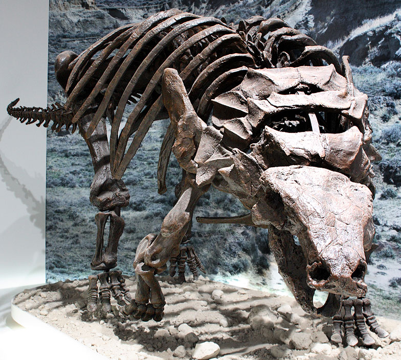
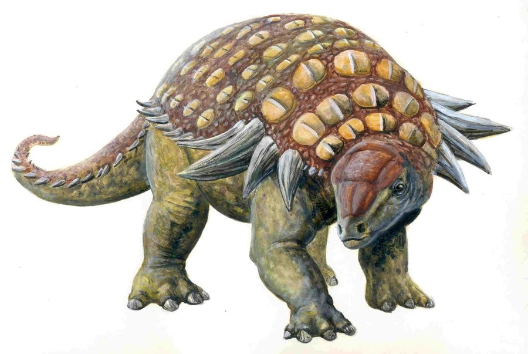
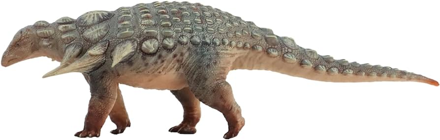
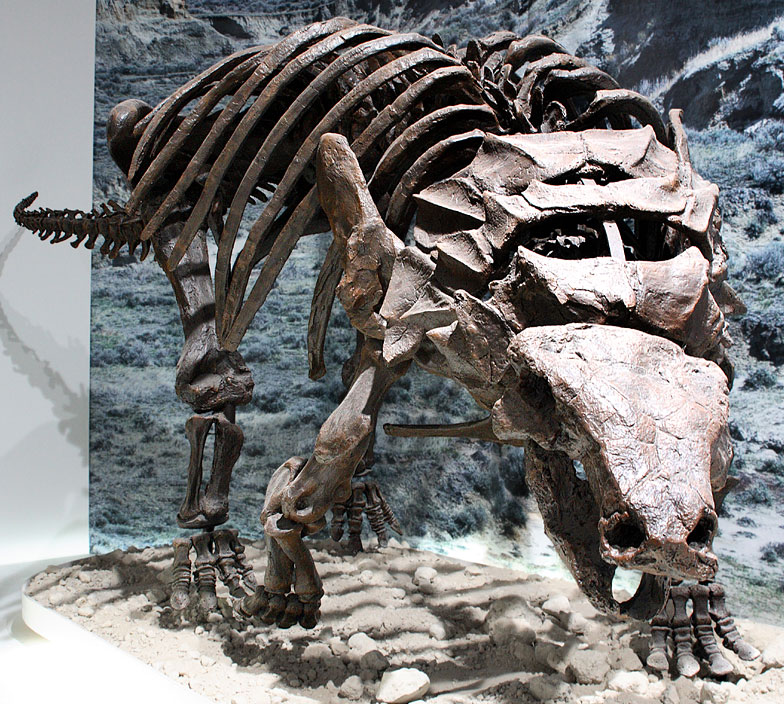
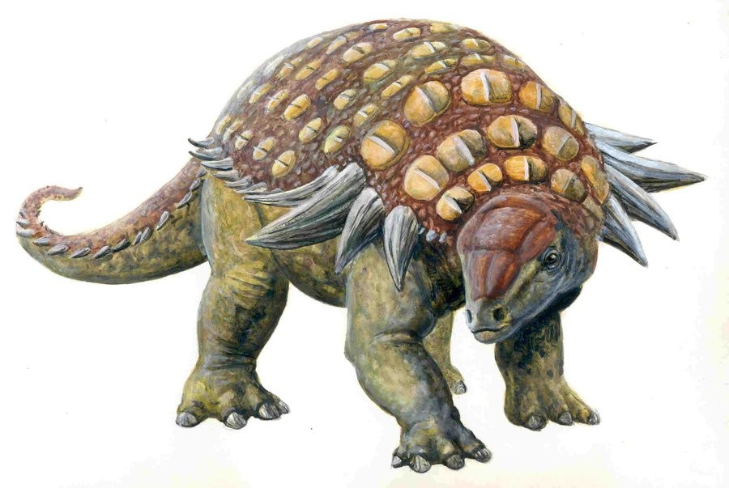
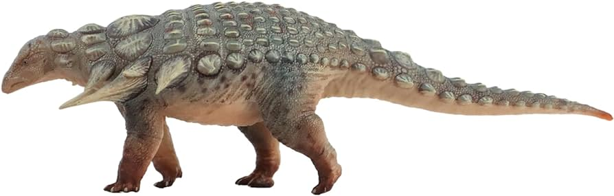

Română
Edmontonia, numită de Charles Mortram Sternberg în 1928, este un gen de dinozaur blindat găsit în America de Nord, în special în Canada și SUA. Acest dinozaur nodosaurid a trăit din stadiile Campanian până la Maastrichtian din perioada Cretacicului târziu. Clasificată în Chordata, Reptilia, Dinosauria, Ornithischia, Thyreophoroidea și Nodosauridae, Edmontonia include trei specii: E. longiceps (specia tip), E. rugosidens și E. schlessmani. Edmontonia era o erbivoră și măsura aproximativ 6,6 metri lungime. Fosilele au fost comparate cu cele ale lui Denversaurus schlessmani și Palaeoscincus rugosidens. Au fost descoperite mai multe exemplare din Edmontonia, oferind perspective valoroase asupra structurii și stilului său de viață. Acest dinozaur este cunoscut pentru armura sa grea și corpul cu vârfuri, care servea drept protecție împotriva prădătorilor.
English
Edmontonia, named by Charles Mortram Sternberg in 1928, is a genus of armored dinosaur found in North America, specifically in Canada and the USA. This nodosaurid dinosaur lived from the Campanian to the Maastrichtian stages of the Late Cretaceous period. Classified under Chordata, Reptilia, Dinosauria, Ornithischia, Thyreophoroidea, and Nodosauridae, Edmontonia includes three species: E. longiceps (the type species), E. rugosidens, and E. schlessmani. Edmontonia was an herbivore and measured approximately 6.6 meters in length. Fossils have been compared to those of Denversaurus schlessmani and Palaeoscincus rugosidens. Multiple specimens of Edmontonia have been discovered, providing valuable insights into its structure and lifestyle. This dinosaur is known for its heavy armor and spiked body, which served as protection against predators.